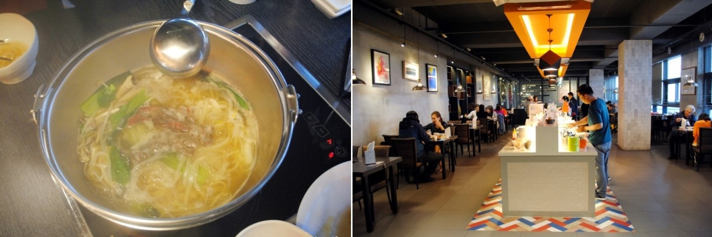
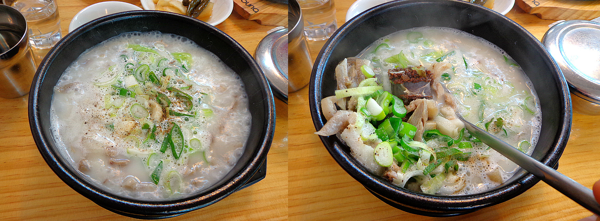
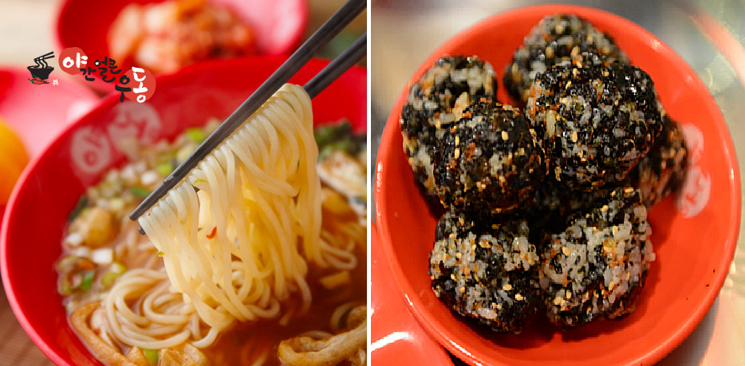

바다회포차

메뉴 : 광어or우럭 소(25,000) 중(35,000) 대(45,000) 모듬회(40,000)
맛평가 : ★★★★★
위치 : 경기 군포시 삼성로8번길 4-5 드림시티
한줄평 : 고향의 맛, 포항이 내게 왔다!
서서갈비
메뉴 : 돼지갈비(7900) 돼지왕갈비(8900)
맛평가 : ★★★★★
위치 : 경기 군포시 삼성로8번길 14
한줄평 : 양념갈비는 사랑입니다.
O'beut 샤브

메뉴 :샤브샐러드바_점심(10900)
맛평가 : ★★★★★
위치 : 경기 군포시 삼성로20번길 3-8
한줄평 : 샐러드바가 매우 만족스럽구나
할매순대국밥

메뉴 : 토종순대국밥(5천), 얼큰순대국밥(6천), 돼지국밥(7천)
맛평가 : ★★★★
위치 : 경기도 군포시 삼성로 6
한줄평 : 돼지국밥만 10번째!
김밥천국
메뉴 : 원조김밥(1,500원) 깻잎김밥(2,000원) 참치김밥(2,500원) 땡초김밥(2,500원)
치즈김밥(2,500원) 돈까스김밥(3,500원)
맛평가 : ★★★
위치 : 경기 군포시 삼성로20번길 4-18
한줄평 : 싸고 다양한 메뉴!
치킨영토
메뉴 : 치토바베큐(16900) 마늘애간장(16900) 소금구이(16900)
맛평가 : ★★★★
위치 : 경기 군포시 삼성로 5
한줄평 : 매웡ㅋ
청년국물떡볶이
메뉴 : 떡튀세트(5500) 커플세트(1만) 국물떡볶이(3000) 찹쌀순대(3000)
맛평가 : ★★
위치 : 경기 군포시 삼성로8번길 10
한줄평 : 무난하다
24시 전주콩나물국밥
메뉴 : 콩나물국밥(3800) 김치문어콩나물국밥(4800) 만두(3000)
맛평가 : ★★★★
위치 : 경기 군포시 삼성로 5
한줄평 : 숙취해소로 쵝오!
야간얼큰우동

메뉴 : 즉석우동(5000) 오돌뼈+주먹밥(13000)
맛평가 : ★★★★★
위치 : 경기 군포시 삼성로20번길 8-20
한줄평 : MSG 국물맛이 끝내줘요!